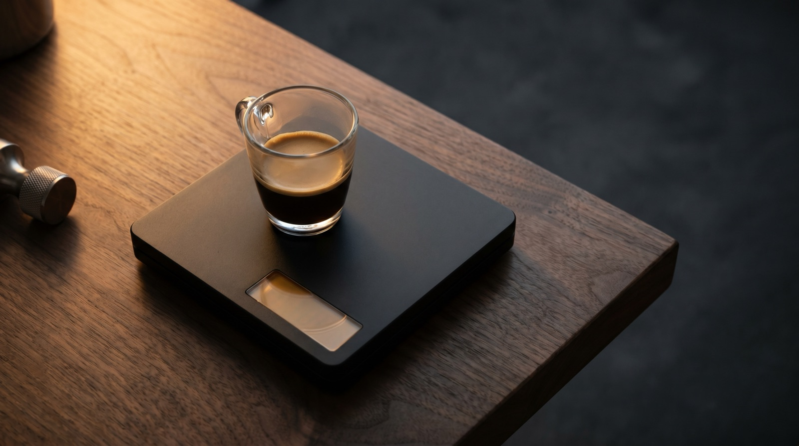
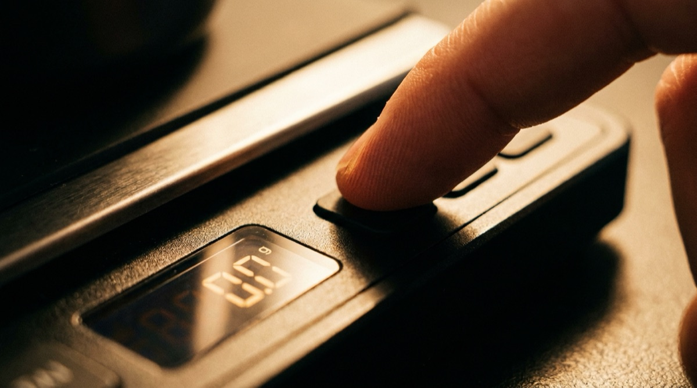

How to use an Acaia scale for espresso: the complete guide.

The Acaia Lunar costs around $250. For a kitchen scale that only measures grams and seconds, that is absurd. For the best brew scale on the market — water-resistant, 0.1 g accurate, sized exactly for a portafilter drip tray, with a responsive screen and a battery that lasts weeks — it is defensible. If you are pulling five shots a day and care about the difference between 36 g and 37 g, a Lunar pays itself back in better coffee.
This guide assumes you've just unboxed your first Acaia. We'll cover which model to choose, what every button does, the modes that matter, how to pair to an iPhone, what the flow rate actually means, and how to read a pour curve. By the end you'll know more about your scale than 90% of Acaia owners.
Why a brew scale matters
An espresso shot has three weight variables: dose, yield, and flow rate over time. A cheap kitchen scale gives you the first two, slowly, with 1 g jitter. A brew scale gives you all three, in real time, with 0.1 g precision.
The practical difference shows up in three places:
- Dosing consistency. 18.0 g and 18.7 g taste noticeably different at a 1:2 ratio. A 0.1 g scale lets you hit your target dose within ±0.1 g; a 1 g scale lets you hit it within ±0.5 g and you'll never know which end you're on.
- Yield in real time. You can stop the shot when the yield hits 36 g, not when it "looks about right". The difference is measurable in the cup.
- Flow rate over time. This is the part most people miss. A Lunar updates 10 times a second. You can see the exact moment your flow plateaus, dips, or spikes — which tells you about channeling, over-extraction, and puck health.
Which Acaia to buy
There are three current Acaia models relevant to home baristas. Spec sheet next to spec sheet, they look similar. In practice they are built for different workflows.
Lunar
The espresso-first Acaia. Designed to fit on a drip tray under a portafilter, IPX5 water-resistant, 2 kg max weight, 0.1 g precision, heated-aluminium platform that doesn't show watermarks. If you pull espresso daily, this is the default recommendation. Price: ~$250.
Pyxis
A smaller, cheaper Lunar cousin released specifically for the espresso market. Same 0.1 g precision, slightly smaller footprint, lighter aluminium body. The trade-off: slightly less durable long-term, no USB-C charging as standard. Price: ~$150. Great choice if the Lunar is out of budget.
Pearl / Pearl S / Pearl 2021
The pour-over model. Larger flat platform, 2 kg capacity, same precision but not water-resistant at the IPX5 level. It works for espresso — we've done it — but the platform is too big for most drip trays. Buy a Pearl if you do more pour-over than espresso. Price: varies by generation, $150–$200.
If you brew both methods and buy one scale, buy the Lunar. It handles pour-over fine (Hario V60 sits on it without issue); the Pearl struggles under a portafilter.

The modes explained
Every Acaia ships with a handful of operating modes, accessed by tapping the mode button on the face. For espresso, two matter:
Weight mode (the boring one)
Just weighs things. Tare button zeros the platform. Timer runs manually. This is what you'd use if the scale is on your pour-over setup and you want to weigh an empty dripper.
Auto-tare mode (sometimes called "Espresso mode")
This is the mode to use for espresso if you're not using a companion app. Place the cup. Put the portafilter in the group head. Pull the shot. The scale auto-tares when the first drop lands, auto-starts the timer, and shows real-time yield. When you lift the cup, the timer stops. No taps required.
If you're using a companion app — ours, or Acaia's own — the app takes over and the mode becomes irrelevant. Most apps force "auto-tare" behaviour regardless of the scale's physical mode setting, because they drive tare via Bluetooth directly.
Pairing with your phone
Bluetooth pairing on an Acaia is handled by the companion app, not by iOS Bluetooth settings. This confuses new users constantly.
- Wake the scale by pressing the power button briefly.
- Open your companion app (Acaia's own app, or a third-party like Extraction).
- The app will show a "pair scale" or "connect scale" option — tap it.
- Select your scale from the list. The first time, you may need to press and hold the power button until the Bluetooth icon flashes; this puts the scale in discoverable mode.
- The app handles the rest. Once paired, subsequent connections are automatic.
If the scale doesn't appear in the list: check that Bluetooth is on, check the scale battery, and force-quit the app and retry. An Acaia that has paired with another device recently sometimes takes two tries to hand off.
Flow rate — the hidden metric
Everyone reads dose and yield off the scale. Almost no one reads flow rate, which is the single most useful number the scale gives you.
Flow rate is grams per second. A well-pulled espresso shot has a flow curve that looks like this: flow ramps up during the first 5 seconds (pre-infusion), plateaus around 1.8–2.5 g/s for the main extraction, then gently declines toward the end. Deviations from this curve tell you what's going wrong.
- Flow spikes above 3.0 g/s. Channeling — water is finding a preferred path through the puck rather than wetting the whole bed. Distribute better and tamp level.
- Flow never reaches 1.5 g/s. Grind too fine, dose too high, or the puck is choking. Back off one click on the grinder.
- Flow plateaus then drops suddenly. Normal end-of-shot behaviour. Stop when this happens — the extraction beyond this point is mostly bitter compounds.
- Flow starts high and stays high. Grind too coarse — water passing through with minimal resistance. Finer.
Once you can read the flow curve, you can diagnose 80% of shot problems before you taste the coffee.
Reading a pour curve
A companion app that records the full weight-over-time trace plots a pour curve — the cumulative yield on the Y axis against time on the X. Reading one takes five seconds and tells you more than any single weight number ever could.
The things to look at, in order:
- First drip time. When did the first drop land? Before 6 seconds means pre-infusion was too short (or absent). After 10 seconds means the puck was too tight.
- Slope between seconds 8 and 20. This is the main extraction. A clean shot has a roughly linear slope. A slope that goes steep-then-flat means channeling early; flat-then-steep means the puck blew out late.
- Stop point. Where did you actually stop the shot? Compare to your target yield. If your target is 36 g and you stop at 38 g, you over-poured — the last 2 g is usually the most bitter part of the shot.
In Extraction, every shot pulled with a paired scale is plotted against your best prior shot of the same coffee as a dashed ghost curve. The comparison is often the most useful data in the app — you can literally see where today's shot diverged from your best one.
Every pour, plotted.
Extraction auto-pairs with your Acaia, captures the pour curve, and overlays your best prior shot of the same bean. Nothing to tap. No timer to start. Just pull and read.
Download on the App StoreCare and calibration
Acaia scales are more fragile than they look. Three rules:
- Don't leave them on a hot drip tray. The heat isn't great for the battery. Park the scale on the counter between shots, not permanently on the machine.
- Wipe water off immediately. The IPX5 rating means it survives splashes; it does not mean it survives puddles that sit for an hour.
- Re-calibrate every few months. The calibration menu is in the settings — you'll need a known reference weight (a 100 g or 500 g calibration weight is ~$10 on Amazon). Drift of 0.3–0.5 g over six months is normal.
Battery life depends on use: pull five shots a day with BLE on and you'll charge about every three weeks. With BLE off and only using the scale directly, battery lasts closer to six weeks.
Frequently asked questions
The Lunar. It's designed for espresso, water-resistant, fits under most portafilters, and is the default for this workflow. The Pyxis is a good cheaper alternative.
Yes. The Lunar handles both — the platform is small enough for a drip tray and large enough for a V60 or Kalita. The Pearl is pour-over-first and awkward under a portafilter.
Standalone works fine for dose and yield. If you want pour-curve capture, auto-pilot during the brew, or a shot history, you need a companion app. Acaia publishes a free app; several third-party apps (including Extraction) support the scale natively.
Hold the power button for 10 seconds until the screen fully clears, then release. The scale will reboot. If that doesn't work, charge it fully first — a flat battery can prevent the reboot sequence from completing.